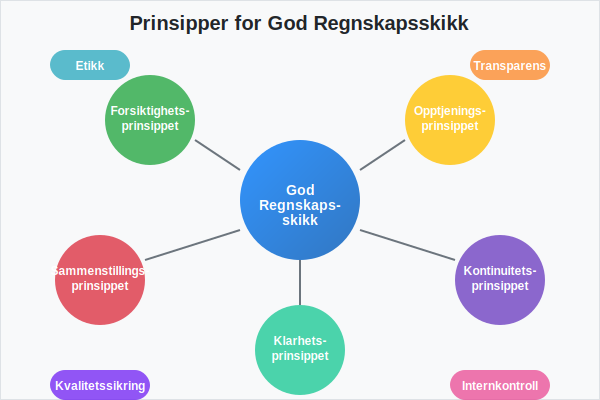
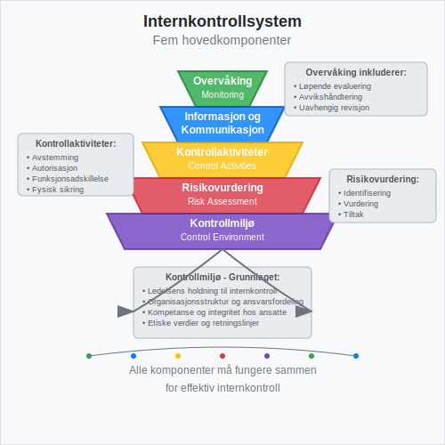
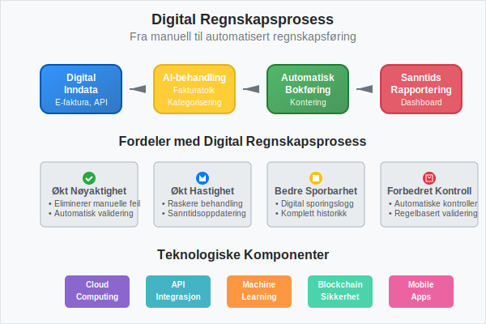
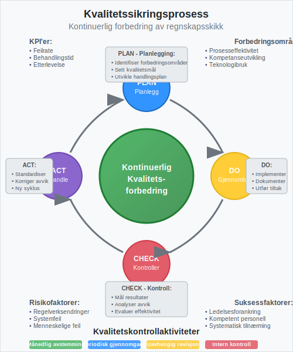

God regnskapsskikk er fundamentet for pålitelig finansiell rapportering og en forutsetning for tillit i næringslivet. Det omfatter ikke bare teknisk korrekthet i bokføring, men også etiske standarder, transparens og systematisk kvalitetssikring. I Norge reguleres god regnskapsskikk gjennom bokføringsloven og bokføringsforskriften, som setter rammene for hvordan virksomheter skal føre sitt regnskap. Moderne implementering av god regnskapsskikk støttes av QA (Quality Assurance) systemer som sikrer kontinuerlig kvalitetskontroll.
For en oversikt over prioriteringen av rettskilder i norsk regnskap og god regnskapsskikk, se Rettskildehierarkiet.
Grunnleggende Prinsipper for God Regnskapsskikk
God regnskapsskikk bygger på flere fundamentale prinsipper som sikrer kvalitet og pålitelighet i finansiell rapportering. Disse prinsippene er nedfelt i norsk lovgivning og internasjonale standarder.

Regnskapsprinsipper i Norge
De grunnleggende regnskapsprinsippene som definerer god regnskapsskikk i Norge inkluderer:
| Prinsipp | Beskrivelse | Praktisk Anvendelse |
|---|---|---|
| Forsiktighetsprinsippet | Usikre tap skal regnskapsføres, usikre gevinster skal ikke regnskapsføres | Nedskrivning av aktiva ved verdifall |
| Opptjeningsprinsippet | Inntekter regnskapsføres når de er opptjent, ikke når de mottas | Periodisering av salg og tjenester |
| Sammenstillingsprinsippet | Kostnader knyttes til tilhørende inntekter i samme periode | Matching av kostnader og inntekter |
| Kontinuitetsprinsippet | Konsistent anvendelse av regnskapsprinsipper over tid | Samme avskrivningsmetoder år for år |
| Klarhetsprinsippet | Regnskapet skal være klart og oversiktlig | Tydelig presentasjon i balanse og resultatregnskap |
Etiske Standarder og Integritet
God regnskapsskikk krever høye etiske standarder fra alle involverte parter. Dette inkluderer:
- Objektivitet - Regnskapsføring basert på faktiske forhold, ikke ønsketenkning
- Integritet - Ærlig og transparent rapportering av finansiell informasjon
- Profesjonell kompetanse - Kontinuerlig utvikling av faglige ferdigheter
- Konfidensialitet - Beskyttelse av sensitiv finansiell informasjon
- Profesjonell oppførsel - Overholdelse av lover, forskrifter og faglige standarder
Internkontroll og Kvalitetssikring
Effektiv internkontroll er en hjørnestein i god regnskapsskikk. Den sikrer at regnskapet er korrekt, komplett og i samsvar med gjeldende regelverk.

Komponenter i Internkontroll
Et robust internkontrollsystem består av fem hovedkomponenter:
-
Kontrollmiljø
- Ledelsens holdning til internkontroll
- Organisasjonsstruktur og ansvarsfordeling
- Kompetanse og integritet hos ansatte
-
Risikovurdering
- Identifisering av risikoer for feil i regnskapet
- Vurdering av sannsynlighet og konsekvens
- Utvikling av risikoreduserende tiltak
-
Kontrollaktiviteter
- Avstemming av kontoer
- Autorisasjonsprosedyrer for transaksjoner
- Fysisk sikring av eiendeler
- Funksjonsadskillelse mellom registrering og godkjenning
-
Informasjon og Kommunikasjon
- Tilgang til relevant og pålitelig informasjon
- Effektiv kommunikasjon av retningslinjer og prosedyrer
- Rapportering av avvik og problemer
-
Overvåking
- Løpende evaluering av internkontrollens effektivitet
- Avvikshåndtering og korrigerende tiltak
- Uavhengig revisjon og kontroll
Dokumentasjon og Sporbarhet
God regnskapsskikk krever systematisk dokumentasjon av alle transaksjoner og prosesser:
- Bilagsbehandling - Alle transaksjoner må støttes av relevante bilag
- Sporbarhet - Mulighet til å følge transaksjoner fra kilde til regnskap
- Oppbevaring - Sikker lagring av regnskapsmateriell i henhold til lovkrav
- Tilgangskontroll - Begrenset tilgang til regnskapsdata basert på roller og ansvar
Regnskapsstandarder og Lovkrav
God regnskapsskikk i Norge følger et hierarki av regnskapsstandarder og lovkrav som sikrer konsistens og sammenlignbarhet. Det norske regnskapsstandardsystemet kombinerer internasjonale standarder med nasjonale tilpasninger, administrert av Norsk RegnskapsStiftelse (NRS).
Hierarki av Regnskapsstandarder
| Nivå | Standard | Anvendelsesområde | Eksempel |
|---|---|---|---|
| 1 | Regnskapslov | Alle regnskapspliktige | Grunnleggende regnskapsprinsipper |
| 2 | God regnskapsskikk | Generell praksis | Bransjespesifikke tolkninger |
| 3 | IFRS | Børsnoterte selskaper | Internasjonale standarder |
| 4 | Forenklet IFRS | Større ikke-børsnoterte | Tilpassede standarder |
| 5 | NRS | Små og mellomstore | Norske regnskapsstandarder |
Sektorspesifikke Krav
Ulike sektorer har spesifikke krav til god regnskapsskikk:
- Finansinstitusjoner - Særlige krav til risikorapportering og kapitaldekning
- Forsikringsselskaper - Spesielle regler for tekniske avsetninger
- Offentlig sektor - Fokus på måloppnåelse og ressursbruk
- Ideelle organisasjoner - Krav til åpenhet om midlenes anvendelse
Digitalisering og Moderne Regnskapsskikk
Digitalisering har transformert god regnskapsskikk og skapt nye muligheter for kvalitetssikring og effektivitet.

Teknologiske Løsninger
Moderne regnskapssystemer støtter god regnskapsskikk gjennom:
- Automatisering - Reduserer manuell feilrisiko i rutineoppgaver
- Integrasjon - Kobler sammen ulike systemer for konsistent dataflyt
- Sanntidsrapportering - Gir løpende innsikt i finansiell status
- Digitale kontroller - Automatiske valideringer og avstemminger
Elektronisk Fakturering og Bilagsbehandling
Elektronisk fakturering og digital bilagsbehandling forbedrer regnskapsskikken ved:
- Økt nøyaktighet - Eliminerer manuelle overføringsfeil
- Bedre sporbarhet - Digital sporingslogg for alle transaksjoner
- Raskere behandling - Automatisk fakturatolk og kontering
- Forbedret kontroll - Automatiske valideringer mot forretningsregler
Rapportering og Transparens
God regnskapsskikk krever transparent og forståelig rapportering til alle interessenter.
Finansiell Rapportering
Kvalitetsregnskap sikrer at finansregnskapet gir et rettvisende bilde av virksomhetens økonomiske stilling:
- Resultatregnskap - Viser lønnsomhet og driftsresultat
- Balanse - Presenterer eiendeler, gjeld og egenkapital
- Kontantstrømoppstilling - Dokumenterer kontantbevegelser
- Noter - Gir detaljerte forklaringer og tilleggsinformasjon
Offentlig Rapportering
Virksomheter må overholde ulike rapporteringskrav:
| Rapporteringstype | Frist | Mottaker | Innhold |
|---|---|---|---|
| Årsregnskap | 5 måneder etter årsslutt | Regnskapsregisteret | Komplett finansregnskap |
| MVA-melding | Månedlig/2-månedlig | Skatteetaten | MVA-beregning |
| A-melding | Månedlig | NAV/Skatteetaten | Lønn og personalopplysninger |
| Skattemelding | Innen 31. mai | Skatteetaten | Skattepliktig inntekt |
Kvalitetssikring og Kontinuerlig Forbedring
God regnskapsskikk krever systematisk kvalitetssikring og kontinuerlig forbedring av prosesser og rutiner.

Kvalitetskontroller
Effektive kvalitetskontroller inkluderer:
- Månedlige avstemminger - Systematisk bankavstemming og kontokontroll
- Periodiske gjennomganger - Regelmessig vurdering av regnskapspraksis
- Uavhengig revisjon - Ekstern kvalitetssikring av regnskapet
- Intern revisjon - Løpende kontroll av prosesser og rutiner
Kompetanseutvikling
God regnskapsskikk krever kontinuerlig kompetanseutvikling:
- Faglig oppdatering - Følge med på endringer i regelverk og praksis
- Teknisk opplæring - Mestre nye regnskapssystemer og verktøy
- Etisk bevissthet - Styrke forståelsen av profesjonelle standarder
- Bransjekunnskap - Forstå spesifikke utfordringer i egen sektor
Utfordringer og Risikofaktorer
God regnskapsskikk møter ulike utfordringer som må håndteres proaktivt.
Vanlige Risikofaktorer
- Kompleks regelverk - Stadig endringer i lover og forskrifter
- Teknologisk utvikling - Behov for kontinuerlig systemoppdatering
- Ressursbegrensninger - Balansere kvalitet mot kostnader
- Kompetansemangel - Sikre tilgang på kvalifisert personell
Risikoreduserende Tiltak
| Risiko | Tiltak | Ansvarlig |
|---|---|---|
| Regelverksendringer | Abonnement på faglige oppdateringer | Regnskapsansvarlig |
| Systemfeil | Backup-rutiner og testing | IT-ansvarlig |
| Menneskelige feil | Dobbel kontroll og opplæring | Alle medarbeidere |
| Svindel | Funksjonsadskillelse og overvåking | Ledelsen |
Beste Praksis for God Regnskapsskikk
Implementering av god regnskapsskikk krever systematisk tilnærming og forankring i organisasjonen.
Organisatoriske Tiltak
- Tydelig ansvarsfordeling - Klare roller og ansvar for regnskapsoppgaver
- Skriftlige rutiner - Dokumenterte prosedyrer for alle regnskapsprosesser
- Regelmessig opplæring - Kontinuerlig kompetanseutvikling for ansatte
- Ledelsesforankring - Toppledelsens støtte til god regnskapsskikk
Praktiske Verktøy
- Kontoplaner - Systematisk og logisk oppbygging av kontostruktur
- Bilagsnummerering - Konsekvent nummerering for sporbarhet
- Månedlige rutiner - Faste prosedyrer for månedsavslutning
- Årsavslutning - Strukturert tilnærming til avslutningsbalanse
Fremtidige Utviklingstrekk
God regnskapsskikk utvikler seg kontinuerlig med nye teknologier og krav.
Teknologiske Innovasjoner
- Kunstig intelligens - Automatisk kategorisering og analyse
- Blockchain - Økt sikkerhet og sporbarhet
- Sanntidsrapportering - Kontinuerlig oppdatering av finansiell status
- Prediktiv analyse - Fremtidsrettet innsikt basert på historiske data
Regulatoriske Endringer
- Økt digitalisering - Krav til elektronisk rapportering
- Bærekraftsrapportering - Integrering av ESG-faktorer
- Internasjonalisering - Harmonisering med globale standarder
- Transparenskrav - Økt åpenhet om forretningsmodeller
God regnskapsskikk er ikke bare et lovkrav, men en investering i virksomhetens troverdighet og langsiktige suksess. Ved å følge etablerte prinsipper, implementere robuste kontroller og kontinuerlig forbedre prosesser, kan organisasjoner sikre høy kvalitet i sin finansielle rapportering og bygge tillit hos alle interessenter.